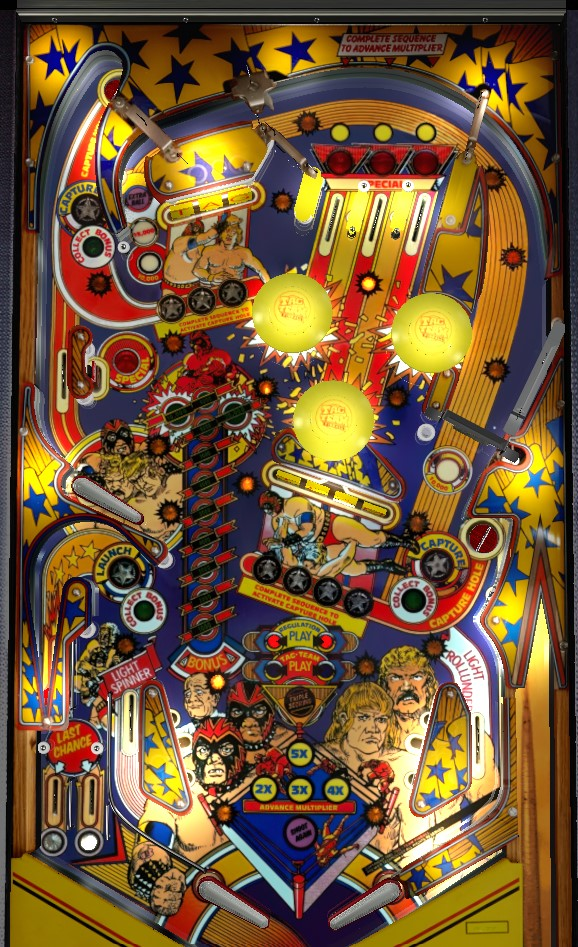

If you're a strong shatz/alley passer, you'll want to alley pass from right to left to trigger the left in lane switch that lights the spinner, then use the left flipper to melt the lit spinner for 10,000 points per spin. If alley passing isn't your thing, play for multiball: complete TAG in order to light the upper left lock, TEAM in order to light the lower right lock, then the lower left horseshoe lane to start multiball once two balls are locked. All playfield scoring is tripled when there is more than one ball on the playfield.
Roll through a lit top lane to unlight it. Lit lanes score 10,000 points, and unlit lanes score 1,000. Lane change is available with the right flipper only to move which lanes are lit. Unlighting all 3 top lanes advances the bonus multiplier one at a time toward the maximum of 5x. When the bonus multiplier is maxed at 5x, one of the three top lanes will be lit for Special. The lit Special lane rotates each time a pop bumper or slingshot is triggered, and does not use lane change.
There are three ways to return to the top lanes mid-ball, one from each flipper; the lower left flipper uses the right orbit spinner lane, the lower right flipper can shoot the narrow lane just left of the TAG targets, and the upper left flipper can shoot the one-way gate just left of the top lanes from below.
The standup target near the upper left flipper is lit for Special only when the center top lane is lit for Special.
Complete the Tag and Team drop targets in order to light locks. The next target needed will be flashing; if the flashing light is in front of a target that has already been knocked down, you must clear the whole bank to reset it to have a chance to hit the flashing target again. Flashing targets score 10,000 points and a bonus advance. Non-flashing targets, whether lit or not, score 5,000 points and a bonus advance.
The game's three saucers all score 10,000 points when made. If they are not lit for Capture, they will kick the ball out immediately. Completing Tag in order lights the top saucer for Capture, which locks the ball for multiball. Completing Team in order lights the lower right saucer for a Capture lock in the same way. If balls are locked in both of those two saucers, the lower left saucer will be lit to release the two locks, starting two-ball multiball. Progress on the drop targets and lit locks are conserved from ball to ball, but any locked balls are kicked out if the ball drains; to play multiball, you need to lock two balls and then release them all in the same turn. For this reason, locks cannot be stolen in a multiplayer game.
During multiball, all playfield scoring is tripled, but there are no multiball-specific scoring features like jackpots. Use multiball to pick off more drop targets to build bonus, shoot back to the top of the table to get top lanes for more bonus multiplier, or shoot the lit spinner for 30,000 points per spin if one of the balls in multiball just rolled through the left in lane. Balls cannot be relocked during multiball.
When the base bonus reaches at least 20,000 points, one of the three saucers around the game will be lit for a bonus collect. Which saucer can collect bonus will rotate with each pop bumper or slingshot hit. The mid-ball bonus collect scores the full bonus including multiplier; it then resets the base bonus to 1,000 points, but keeps the multiplier intact.
The spinner scores 1,000 points per spin, or 10,000 per spin when lit. The spinner is only lit for a few seconds immediately after rolling through the left in lane. 10,000 per spin of the spinner is one of the most powerful scoring features in the game, with one good spinner shot being worth 250,000 points or more; during multiball, where all playfield scoring is tripled, a strong shot to a well-maintained spinner could score over 1,000,000 points. A lit spinner all day strategy is viable if you have a way to reliably put the ball into the left in lane.
The right in lane briefly lights the "rollunder" for an increasing award. The rollunder is a hanging target at the end of the lane just left of the Tag targets, which feeds the top lanes. A right in lane -> rollunder lane combo scores 10,000 points the first time, 25,000 points the second time, and an extra ball the third time. This is an extremely narrow combo shot.
There are two out lanes on the left side; exactly one of the two will always be lit, alternating with pop bumper and slingshot hits. If you roll through the lane lit for Last Chance while at least one ball has been locked, a locked ball will kick out and you can continue playing, like a ball saver. You will need to recomplete Tag or Team to requalify the kicked out lock and get back toward multiball, but it's better to lose one lock and keep your turn than lose an entire ball.
There is no right out lane at all.
Bonus is only increased by any drop target. Bonus is multiplied by completing the top lanes; each completion adds 1 to the bonus multiplier, with a maximum of 5x. I have seen two different settings for bonus multiplier carryover: in one case, bonus multiplier was always carried over until the special was collected, at which point it would reset to 1x for the next ball, and in the other case, bonus multiplier was always decreased by 1 when a player's turn ended. Max bonus is 5x 29,000 = 145,000 points; a bug in the way the bonus ladder works makes it look like you jump directly from 19,000 to 30,000 in base bonus, but in reality, if the 20,000 light on the bonus ladder is on, the 10,000 light should not be. Bonus can be collected mid-ball as described above. End of ball bonus has moderate value, but can be realtively easily outweighed by good spinner hits or lots of multiball drop targets.
In competition/novelty play, extra balls and specials score 500,000 points. This is quite significant, much more so than something like the end of ball bonus. If playing for a high score with this setting on, an up-top-all-day strategy through the spinner can become considerably more valuable, even if you don't have a way to consistently trigger the left in lane to light the spinner. As far as I am aware, there is a maximum of 1 special and 1 extra ball per ball in play.